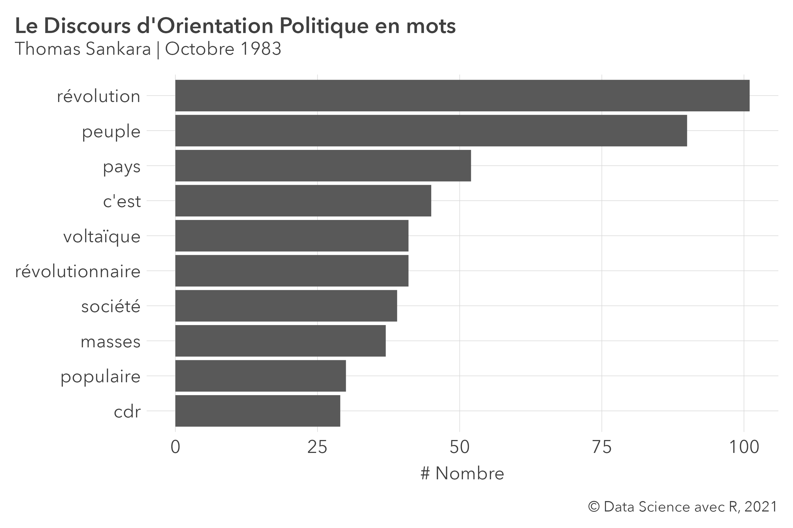
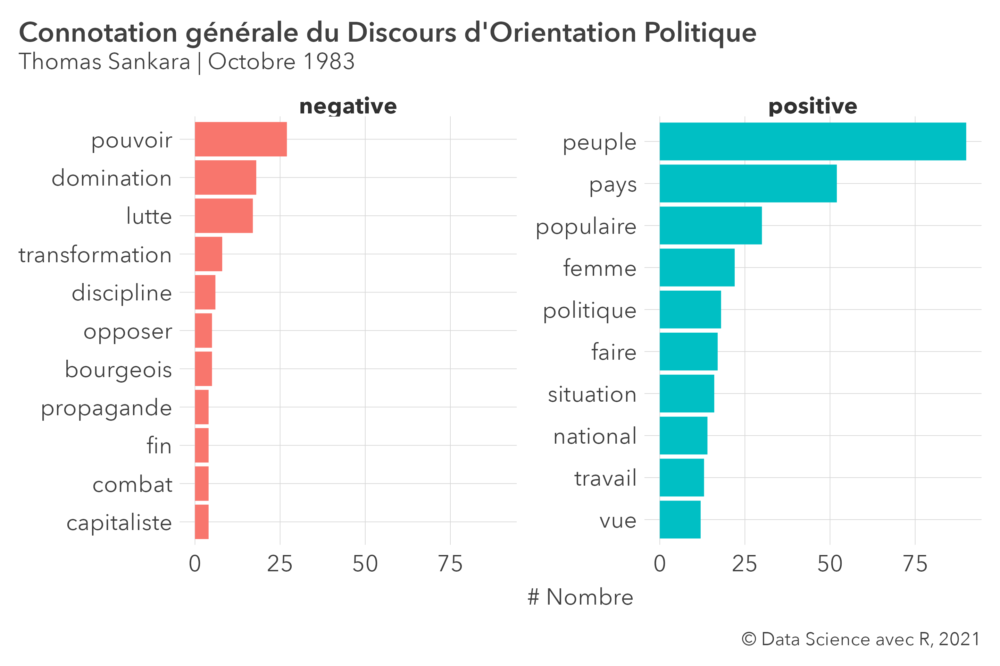
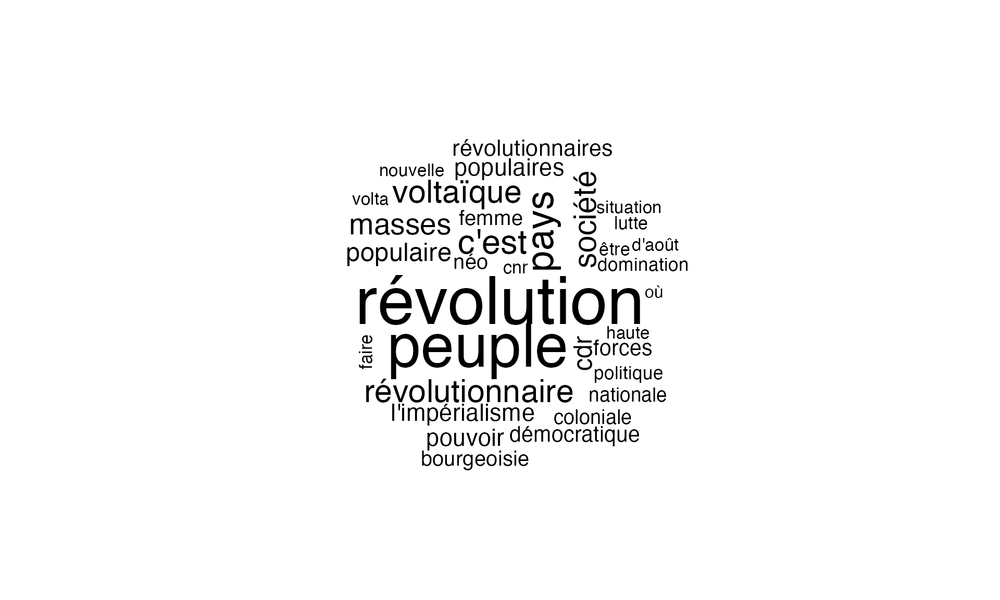
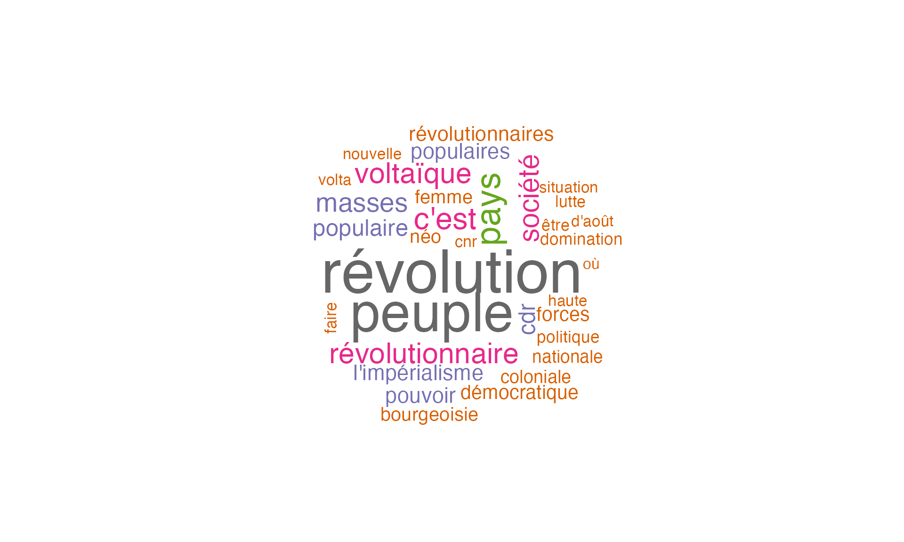
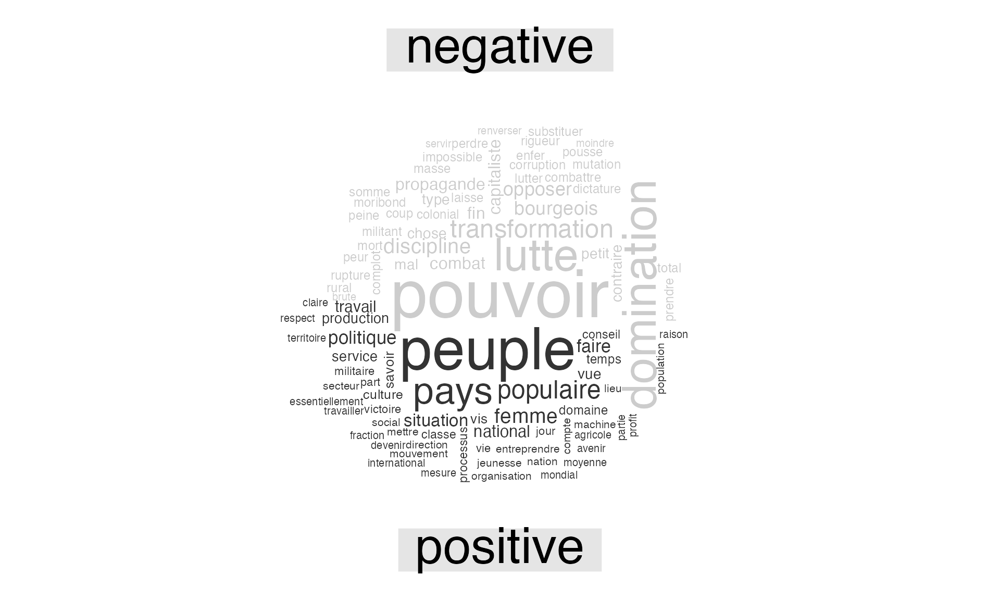
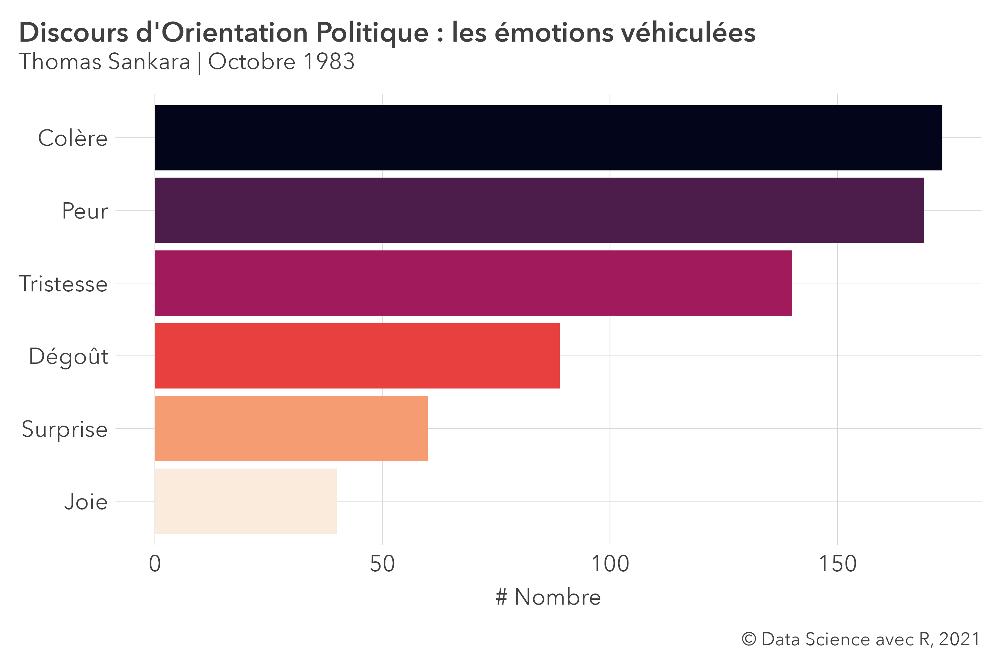

Introduction
Le text mining (également connue sous le nom d’analyse de texte) est le processus de transformation de texte non structuré en données structurées pour une analyse facile. L’exploration de texte utilise le traitement du langage naturel (ou Natural Language Processing en anglais -NLP), permettant aux machines de comprendre le langage humain et de le traiter. En effet l’exploration de texte automatise le processus de classification des textes par sentiment, sujet et intention. Cet article va introduire la notion de texte mining, énumerer quelques méthodes et proposer une mise oeuvre simple avec le logiciel R.
Les techniques du Text Mining
Il existe différentes méthodes et techniques de text mining. Dans cette section, nous allons couvrir certains des plus fréquents. De façon globale l’analyse de texte, suit le workflow ci-après défini dans Text Mining with R : A Tidy Approach. Un ouvrage excéllent pour aller plus loin dans le text mining.

La fréquence des mots
La fréquence des mots peut être utilisée pour identifier les termes ou concepts les plus récurrents dans un ensemble de données. Trouver les mots les plus mentionnés dans un texte non structuré peut être particulièrement utile lors de l’analyse des avis des clients, des conversations sur les réseaux sociaux ou de discours.
La collocation
La collocation fait référence à une séquence de mots qui apparaissent généralement les uns à côté des autres. Les types de collocations les plus courants sont les bigrammes (une paire de mots susceptibles d’aller ensemble, comme démarrer, gagner du temps ou prendre une décision) et les trigrammes (une combinaison de trois mots, comme à distance de marche ou rester en contact).
Identifier les collocations - et les compter comme un seul mot - améliore la granularité du texte, permet une meilleure compréhension de sa structure sémantique et, au final, conduit à des résultats de text mining plus précis.
L’analyse de sentiment
Elle consiste à analyser les émotions qui sous-tendent un texte donné. Supposons que vous analysiez une un feedback client sur votre application mobile. Vous découvrirez peut-être que les sujets les plus fréquemment mentionnés dans ces revues sont la convivialité ou la facilité d’utilisation, mais ce n’est pas assez d’informations pour tirer des conclusions. L’analyse des sentiments vous aide à comprendre l’opinion et les sentiments dans un texte et à les classer comme positifs, négatifs ou neutres. L’analyse des sentiments a de nombreuses applications utiles. En effet, elle peut se reveler un réel atout en support client, en proposition de services basés sur retour utilisateur ou simplement appréhender la tendance générale d’un discours.
Reproductibilité
Dans cette section se trouve tout ce dont vous avez besoin pour reproduire les différentes analyses sur votre ordinateur.
Package R
Les différents packages dont nous aurons besoin sont les suivants :
library(tidytext) # CRAN v0.3.2
library(rfeel) # [github::ColinFay/rfeel] v0.0.0.9000
library(proustr) # CRAN v0.4.0
library(tidyverse) # CRAN v1.3.1
library(pilot) # [github::olihawkins/pilot] v3.5.0
library(extrafont) # CRAN v0.17
library(readr) # CRAN v2.1.0
library(wordcloud) # CRAN v2.6
loadfonts()
Données
Les données à utiliser devant être textuelles,nous avons récuperer ici le Discours d’Orientation Politique (DOP) prononcé le 02 Octobre 1983 par le Capitaine Thomas Sankara. Le discours à été copier dans un fichier texte.
Thème général des plots
theme_set(new = theme_pilot(
title_size = 30, subtitle_size = 25,
caption_size = 20, axis_text_size = 25, axis_title_size = 25
))
Import et traitement des données
Import et formatage
Dans cette section, nous allons importer le discours d’orientation politique dans R et le formater selon le principe du tidy text data.
dop_speech <- read_lines(
file = "../../data/dop_02_oct_thomas_sankara.txt"
) %>%
tibble(line = 1:179, text = .)
Tokénisation du texte
Nous avons à présent pour, 179 lignes de textes. Pour le moment il est difficile de travailler ce texte. Il va falloir décomposer les lignes de textes en “tokens”. Un token est une unité de texte significative, le plus souvent un mot, que nous souhaitons utiliser pour une analyse plus approfondie, et la “tokenisation” est le processus de division du texte en “tokens”.
Pour ce faire, nous utiliserons la fonction unnest_tokens() du package tidytext.
dop_speech %>%
unnest_tokens(word, text)
# A tibble: 10,222 × 2
line word
<int> <chr>
1 1 peuple
2 1 de
3 1 haute
4 1 volta
5 2 camarades
6 2 militantes
7 2 et
8 2 militants
9 2 de
10 2 la
# … with 10,212 more rowsAprès avoir utilisé la fonction unnest_tokens(), nous avons divisé chaque ligne de manière à ce qu’il y ait un token (mot) dans chaque ligne de la nouvelle table de données ; la tokénisation par défaut dans unnest_tokens() concerne les mots simples (pas composés), comme indiqué ici. Vous pouvez également notez que :
Les autres colonnes, telles que le numéro de ligne d’où provient chaque mot, sont conservées.
La ponctuation a été supprimée.
Par défaut, unnest_tokens() convertit les tokens en minuscules, ce qui les rend plus faciles à comparer ou à combiner avec d’autres ensembles de données.
Avoir les données de texte dans ce format nous permet de manipuler, de traiter et de visualiser le texte à l’aide de l’écosystème tidyverse.
Néttoyer les mots vides ou stopwords
Maintenant que les données sont au format un mot par ligne, nous pouvons les manipuler avec des outils du tidyverse comme dplyr. Souvent dans l’analyse de texte, nous voudrons supprimer les mots vides ( des sens ); Les mots vides sont des mots qui ne sont pas utiles pour une analyse, généralement des mots extrêmement courants tels que « le », « de », « à », et ainsi de suite. Nous pouvons les supprimés de notre jeux de données. Pour cela nous allons utiliser la base de données stop_words contenu dans le package proustr.
dop_speech_clean <- dop_speech %>%
unnest_tokens(word, text) %>%
anti_join(x = ., stop_words)
On passe alors de plus de 10 000 mots à quelques 5200, après nettoyage des mots vides !
Nous avons en plus de ces mots, du texte numérique que nous devons nettoyer . Nous utiliserons le regex pour les supprimer.
Ici le code permet de les retrouver.
num_val <- dop_speech_clean %>%
pull("word") %>%
grep(pattern = "[0-9]", x = ., value = TRUE)
head(num_val)
[1] "1983" "4" "1983" "17" "1983" "17" Une fois les nombres retrouver, nous procéderons à leur suppression. Le mot “à” est tout de même contenu dans notre texte, . Il faut noter que les textes en français sont plus difficiles à analyser : accents, apostrophes et pleins de caractères spéciaux, et même l’encodage pose des fois problèmes. Nous ferons avec 😅.
Analyse et visualisation du texte
Dans cette question il sera question d’analyser le texte à proprement parler. Quels sont les mots utilisés de façon fréquence, leur polarité (positif ou négatif) ainsi que le sentiment générale dégagé par le texte (joie, tristesse etc..). Il est important de garder à l’esprit que nous sommes en introduction et qu’il est plus approprier pour un linguiste, un communicateur de tirer de meilleures informations. A la base je ne possède pas ses compétences.
Fréquence des mots
Comme dit plus haut, une des méthodes d’analyses du texte consiste à élaboré une table de fréquence de ceux. concrètement il s’agira pour chaque mot de compter combien de fois il a été utilisé dans le texte. Le package dplyr offre d’importantes facilités pour y arriver.
# A tibble: 2,263 × 2
word freq
<chr> <int>
1 à 221
2 révolution 101
3 peuple 90
4 pays 52
5 c'est 45
6 révolutionnaire 41
7 voltaïque 41
8 société 39
9 masses 37
10 populaire 30
# … with 2,253 more rowsUn aperçu rapide indique que le mot le plus fréquent dans ce discours est peuple suivi loin derrière par pays. Il démeurre des soucis avec “à”,“d’une” etc.. que je ne saurais expliquer à l’étape actuelle. Comme pour dire que l’analyse de texte est un travail fastidieux et nécessite de la minutie. Dans cet article nous les supprimerons. Bien entendu nous perdons de l’information. Nous reviendrons dans un autre article sur comment nettoyer, filtrer du texte avec regex (regular expressions.)
Les dix mots les plus fréquents :
word_freq <- dop_speech_clean %>%
count(word, sort = TRUE, name = "freq") %>%
filter(!(word %in% c("à", "d'une"))) %>%
top_n(10)
word_freq %>%
kableExtra::kable(format = "markdown")
| word | freq |
|---|---|
| révolution | 101 |
| peuple | 90 |
| pays | 52 |
| c’est | 45 |
| révolutionnaire | 41 |
| voltaïque | 41 |
| société | 39 |
| masses | 37 |
| populaire | 30 |
| cdr | 29 |
Une visualisation rapide :
word_freq %>%
mutate(word = reorder(word, freq)) %>%
ggplot(mapping = aes(x = word, y = freq)) +
geom_col() +
coord_flip() +
labs(
x = NULL, y = "# Nombre",
title = "Le Discours d'Orientation Politique en mots",
subtitle = "Thomas Sankara | Octobre 1983 ",
caption = " © Data Science avec R, 2021"
) +
theme(plot.title.position = "plot")

Connotation des mots
Une autre technique d’analyse de données textuelles consiste à déterminer si un mot à une connotation positive ou négative et de trouver une manière élégante de visualiser tout cela.
La connotation (positive ou négative ) des mots en français est consignée dans la base de données du package rfeel.
Barchart:
connotation %>%
mutate(word = reorder(word, freq)) %>%
ggplot(mapping = aes(x = word, y = freq, fill = polarity)) +
geom_col() +
coord_flip() +
facet_wrap(~polarity, scales = "free_y") +
labs(
x = NULL, y = "# Nombre",
title = "Connotation générale du Discours d'Orientation Politique",
subtitle = "Thomas Sankara | Octobre 1983",
caption = "© Data Science avec R, 2021"
) +
theme(
legend.position = "none",
strip.text = element_text(size = 25, hjust = .5),
plot.title.position = "plot"
)

D’une manière générale, le discours dégage une connotation positive.
Wordcloud ou nuage de mots
Un nuage de mots n’est ni plus ni moins qu’une représentation visuelle permettant :
d’identifier rapidement les mots clés présentant le plus d’occurrences dans un texte (plus un mot apparaît fréquemment, plus la taille de la police dans le nuage de mots est grande)
de faciliter la compréhension d’un texte
de repérer rapidement les idées principales d’un texte en faisant apparaître les champs lexicaux présents dans ce dernier.
Implémentation dans R:
set.seed(123)
dop_speech_clean %>%
filter(!(word %in% c("à", "d'une"))) %>%
count(word) %>%
with(wordcloud(
words = word, freq = n, max.words = 100,
random.order = FALSE, min.freq = 15
))

Voilà un joli nuage de mots issu du discours d’orientation politique. Nous pouvons le parfaire en ajoutant une touche de couleur.
set.seed(123)
pal <- brewer.pal(8, "Dark2")
dop_speech_clean %>%
filter(!(word %in% c("à", "d'une"))) %>%
count(word) %>%
with(wordcloud(
words = word, freq = n, max.words = 100,
random.order = FALSE, min.freq = 15,
colors = pal
))

Un autre wordcloud avec la connotation (positive ou négative) :
set.seed(123)
library(reshape2)
dop_speech_clean %>%
inner_join(x = ., y = rfeel("polarity")) %>%
group_by(polarity) %>%
count(word, polarity, sort = TRUE, name = "freq") %>%
acast(word ~ polarity, value.var = "freq", fill = 0) %>%
comparison.cloud(
colors = c("gray80", "gray20"),
max.words = 100, random.order = F
)

Analyse de sentiment
L’analyse de sentiment consiste à analyser les émotions contenues dans un texte (joie, tristesse etc…). Je repètes qu’à ce niveau une expertise est hautement souhaitable. Nous présentons ici une introduction ainsi qu’une mise en oeuvre pratique en utilisant R. Nous allons nous servir de la base de données contenue dans rfeel qui reprend les six émotions selon Ekman.
sentiment <- c(
"Joie", "Surprise", "Dégoût", "Tristesse", "Peur",
"Colère"
)
dop_speech_clean %>%
inner_join(x = ., y = rfeel("score")) %>%
group_by(sentiment) %>%
summarise(freq = n()) %>%
ungroup() %>%
mutate(sentiment = reorder(sentiment, freq)) %>%
ggplot(data = ., mapping = aes(x = sentiment, y = freq, fill = sentiment)) +
geom_col() +
scale_x_discrete(label = sentiment) +
scale_fill_viridis_d(option = "F", direction = -1) +
coord_flip() +
theme(
legend.position = "none",
plot.title.position = "plot"
) +
labs(
title = "Discours d'Orientation Politique : les émotions véhiculées",
subtitle = "Thomas Sankara | Octobre 1983",
caption = "© Data Science avec R, 2021",
x = NULL, y = "# Nombre"
)

Le DOP d’Octobre 1983 dégageait plus de la colère ?
Conclusion
Comme nous l’avons dit en introduction, le Text Mining regorge bien de techniques avancées comme la classification de texte, des algorithmes d’apprentissage supervisé et j’en passe. Cet article avait pour but d’introduire quelque notions et de susciter un intérêt sur la question.
Ressources
Pour en apprendre plus veuillez consulter ses ressources.
Reférences
Colin Fay (2019). proustr: Tools for Natural Language Processing in French. R package version 0.4.0. https://CRAN.R-project.org/package=proustr
Colin Fay (2021). rfeel: Access the FEEL Lexicon. R package version 0.0.0.9000. https://github.com/ColinFay/rfeel
Erich Neuwirth (2014). RColorBrewer: ColorBrewer Palettes. R package version 1.1-2. https://CRAN.R-project.org/package=RColorBrewer
H. Wickham. ggplot2: Elegant Graphics for Data Analysis. Springer-Verlag New York, 2016.
Hadley Wickham (2007). Reshaping Data with the reshape Package. Journal of Statistical Software, 21(12), 1-20. URL http://www.jstatsoft.org/v21/i12/.
Hadley Wickham (2019). stringr: Simple, Consistent Wrappers for Common String Operations. R package version 1.4.0. https://CRAN.R-project.org/package=stringr
Hadley Wickham (2021). forcats: Tools for Working with Categorical Variables (Factors). R package version 0.5.1. https://CRAN.R-project.org/package=forcats
Hadley Wickham (2021). tidyr: Tidy Messy Data. R package version 1.1.4. https://CRAN.R-project.org/package=tidyr
Hadley Wickham and Jim Hester (2021). readr: Read Rectangular Text Data. R package version 2.1.0. https://CRAN.R-project.org/package=readr
Hadley Wickham, Romain François, Lionel Henry and Kirill Müller (2021). dplyr: A Grammar of Data Manipulation. R package version 1.0.7. https://CRAN.R-project.org/package=dplyr
Ian Fellows (2018). wordcloud: Word Clouds. R package version 2.6. https://CRAN.R-project.org/package=wordcloud
Kauê de Sousa and Adam H. Sparks and William Ashmall and Jacob van Etten and Svein Ø. Solberg (2020). chirps: API Client for the CHIRPS Precipitation Data in R. Journal of Open Source Software, 5(51), 2419, https://doi.org/10.21105/joss.02419
Kirill Müller and Hadley Wickham (2021). tibble: Simple Data Frames. R package version 3.1.6. https://CRAN.R-project.org/package=tibble
Lionel Henry and Hadley Wickham (2020). purrr: Functional Programming Tools. R package version 0.3.4. https://CRAN.R-project.org/package=purrr
Makowski, D., Ben-Shachar, M.S., Patil, I. & Lüdecke, D. (2020). Automated Results Reporting as a Practical Tool to Improve Reproducibility and Methodological Best Practices Adoption. CRAN. Available from https://github.com/easystats/report. doi: .
Matthew Lincoln (2020). clipr: Read and Write from the System Clipboard. R package version 0.7.1. https://CRAN.R-project.org/package=clipr
Oliver Hawkins (2021). pilot: A minimal ggplot2 theme with an accessible discrete color palette. R package version 3.5.0.
R Core Team (2021). R: A language and environment for statistical computing. R Foundation for Statistical Computing, Vienna, Austria. URL https://www.R-project.org/.
Silge J, Robinson D (2016). “tidytext: Text Mining and Analysis Using Tidy Data Principlesin R.” _JOSS_, *1*(3). doi: 10.21105/joss.00037 (URL: https://doi.org/10.21105/joss.00037),<URL:,<URL:) http://dx.doi.org/10.21105/joss.00037.
Wickham et al., (2019). Welcome to the tidyverse. Journal of Open Source Software, 4(43), 1686, https://doi.org/10.21105/joss.01686
Winston Chang, (2014). extrafont: Tools for using fonts. R package version 0.17. https://CRAN.R-project.org/package=extrafont